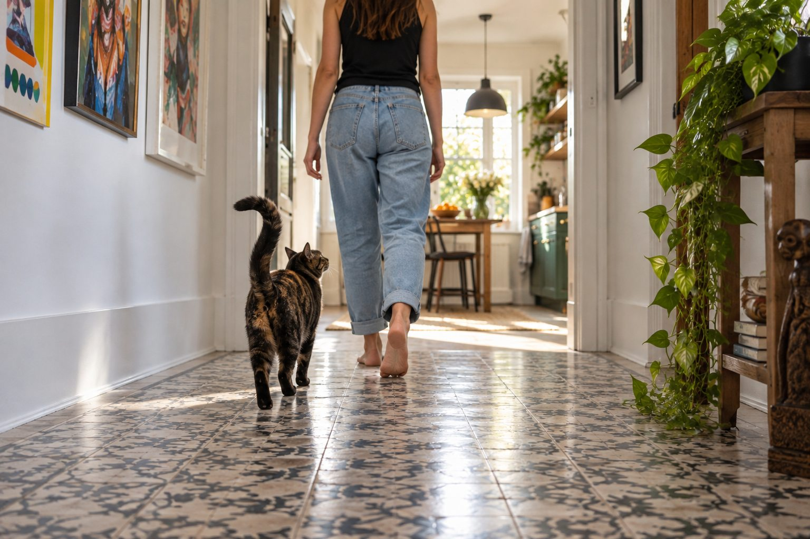

Following can be ordinary social behavior. A sudden increase paired with distress, appetite changes, or other symptoms deserves veterinary advice.
Some cats are quiet companions who move from room to room with their people. Others appear just before mealtime. Following by itself is rarely a problem; the important question is whether the behavior is familiar, relaxed, and comfortable for your cat.
Common everyday reasons
Your cat may seek company, anticipate food, enjoy a warm room, or be curious about what you are doing. Many cats build predictable routes around household routines. A cat who follows and settles nearby with a relaxed body is often simply being social.
Notice what happens after your cat follows you. Does it lead you to an empty bowl, a closed door, or a favorite play area? Respond to the actual need rather than assuming every follow means hunger.
Notice when the cat follows and what happens next. A relaxed cat may simply prefer your company, especially if you move between interesting rooms. A cat that appears only before meals may have learned your schedule. Another may follow into the bathroom because that room offers a predictable moment of attention. Look at body language: a loose posture, normal tail, and easy settling suggest a different state from frantic vocalizing or pacing. Following is a behavior, not a diagnosis.
Compare it with this cat's history. Has it always shadowed you, or is the behavior new? Does it still eat, groom, use the litter box, and rest normally when you are away? Those questions make the pattern more informative than the number of footsteps behind you. Enjoy ordinary companionship while remaining alert to a meaningful change.
When the pattern changes
A new, intense need to stay close can occur with stress or a change at home. It can also accompany discomfort or illness. Look for changes in appetite, water intake, litter habits, vocalizing, and activity.
If the behavior is sudden or your cat seems distressed, consult your veterinarian. A behavior label should not replace a health check when other signs are present.
A sudden increase in following may be worth a health check, especially if the cat also drinks more, loses weight, seems confused, becomes unusually vocal, or changes litter habits. Pain or illness can alter social behavior in different directions; some cats hide while others seek more contact. Do not assume that increased affection always means the cat is happy, and do not assume it always means illness. The combination of signs and the change from baseline guide the next step.
Keep a timeline of when the new pattern began. Note recent moves, schedule changes, new pets, and medications, but also appetite and toileting. Share the information with your veterinarian if the behavior persists or comes with other signs. A clear history allows a better assessment than a vague description that the cat is needy.

Support a confident cat
Offer regular play, places to climb, comfortable resting spots, and predictable meals. Let your cat choose closeness without forcing contact. If you need to close a door, provide an appealing alternative area with familiar items.
For a cat who becomes distressed when alone, build short, calm separations and consider advice from a veterinarian or qualified cat behavior professional.
Support independence by making safe places appealing, not by pushing the cat away. Offer a comfortable perch, a quiet hideaway, scratching surfaces, and short play sessions at predictable times. A food puzzle or foraging activity can give a healthy cat something to do while you work, provided the food is included in its daily allowance. Let the cat choose whether to participate and provide a resting spot near you if it prefers company. Independence and closeness are not opposites.
In a multicat household, check whether the follower is avoiding another pet or has limited access to its own resources. Separate food, water, litter, and resting areas may reduce pressure. A cat that stays close to you because it feels safer should not be punished for doing so. Improve the environment and observe whether its confidence grows.
Read the whole following pattern
| What you notice | What it suggests you check |
|---|---|
| Cat follows, settles, and otherwise acts normally | Offer companionship and comfortable resting choices. |
| Following begins after a household change | Review routine, safe spaces, and access to resources. |
| New clinginess plus weight, thirst, or litter changes | Arrange a veterinary assessment of the broader pattern. |
Following by itself is a normal behavior for many social cats.
Enjoy the relationship
Following is one of many ways cats interact with people. Respect the cat's signals: a relaxed tail and soft posture differ from pacing, frantic meowing, or inability to settle. The whole picture tells you more than the behavior alone.
When you need quiet work time, set up an acceptable nearby place for the cat. Reward it for settling there and offer attention before you begin a long task rather than only when it interrupts. Keep the routine gentle; shutting a social cat away abruptly may increase distress. If the cat follows to unsafe places such as a hot kitchen or an open workshop, manage access with a safe alternative room and familiar resources. Safety boundaries can be consistent without treating companionship as a problem.
Watch whether the cat can rest without constant interaction. A relaxed follower may curl up and sleep after arriving. A cat that cannot settle, cries when separated, or stops eating when alone may need a veterinary and behavior assessment. Do not diagnose separation distress from one inconvenient morning. Collect a pattern over time.
Practical details
Notice what the cat does next
A cat who follows you into a room and curls up nearby may simply enjoy your company. A cat who leads you toward a bowl or a closed door may be making a specific request. Watch body language: relaxed posture and easy settling differ from frantic pacing, repeated vocalizing, or inability to rest. The behavior's meaning comes from the pattern around it, not a single label.
Try responding to the likely need without assuming every request is for food. Check water, litter, play, and access to a favorite resting spot. Repeatedly offering snacks can add calories and may teach the cat to lead you to the kitchen more often.
Four easy assumptions to question
- Every follow means hunger
- A cat may also want company, play, a warm room, or access through a door.
- Closeness always means anxiety
- Many social cats follow people while remaining relaxed and able to settle alone.
- Sudden clinginess is harmless
- New behavior with appetite, litter, or energy changes deserves veterinary advice.
- More attention fixes everything
- Predictable play and independent resting places can help a cat feel secure.
Routine and relationship can coexist
Cats learn household schedules remarkably well. A cat may wait near the hallway when you usually start work, then follow you to a familiar chair. Predictable behavior can also reflect social attachment. Enjoying the company does not require the cat to be physically close at every moment; give the cat a choice to approach or leave.
Provide comfortable resting spots in more than one room. A perch, a soft bed, and safe play opportunities let the cat spend time nearby without needing constant attention. In a multi-cat home, make sure another cat is not blocking access to resources and driving the follower to stay close to you for security.
Consider one cat that trails its person to the study, settles in a window bed, and naps. That is ordinary social behavior. Another formerly independent cat begins following constantly, yowls at night, and drinks more. The second situation deserves a veterinary appointment. A third cat follows only when a new dog is loose in the hallway; better separation and access to safe resources may help, alongside checking for any health changes. Similar movements can reflect very different needs.
Respond to the context rather than trying to stop following altogether. A cat does not need to be ignored to become confident. Predictable contact, play, and appropriate choices allow the relationship to remain enjoyable while you notice whether the animal is comfortable.
When a new pattern deserves a closer look
A sudden increase in following can occur after a move, a new pet, or a schedule change. It can also accompany discomfort or illness. Note appetite, water intake, litter habits, vocalizing, grooming, and activity. A veterinarian can assess whether a medical explanation needs investigation; behavior alone cannot tell you.
If the cat becomes distressed whenever a door closes or you leave, a qualified cat behavior professional may help after medical issues are considered. Keep separations short and calm while seeking advice. The goal is a cat that can enjoy your company and feel secure when you are in another room.
Review the pattern when life changes. A move, a new work-from-home schedule, or a family member's absence may make the cat seek more contact for a while. Keep meals and play predictable and preserve familiar resting options. If the cat adapts and continues normal eating and litter use, the extra company may be a harmless adjustment. If behavior escalates or other signs appear, ask for help rather than waiting indefinitely.
The practical question is whether the cat can choose to follow and then relax. Following a person is not inherently a problem to train away. It becomes worth investigating when the behavior is sudden, intense, or accompanied by changes in health or daily functioning. That distinction protects the cat while allowing you to enjoy a close bond.
If the cat follows you into every room, offer a nearby resting option where it can choose to stay while you move around. Reward relaxed settling with gentle attention or a small planned treat, then continue your normal routine. This does not require ignoring the cat or forcing separation. The aim is to give it several comfortable choices. A window perch, quiet bed, and predictable play may reduce boredom while preserving a close relationship.
Keep an eye on sudden changes. A cat that becomes markedly more attached and also changes eating, drinking, vocalizing, grooming, or litter use should be assessed by a veterinarian. Describe the complete pattern rather than presenting following as the only symptom. If health is stable and the cat relaxes easily, closeness may simply be its normal social style. Enjoy it while ensuring the cat has safe places to rest independently when it wants.
Read the context of a shadowing cat
Notice when your cat follows you and what it does on arrival. A cat that strolls along with a relaxed tail and then settles nearby may simply enjoy company. A cat that follows only around meal times may have learned the household schedule. If following comes with frantic vocalizing, repeated requests for food, or a new reluctance to be alone, look more closely at the change.
Provide independent options: a comfortable perch, a quiet hiding place, regular play, and predictable meals. Invite interaction when the cat seeks it, but allow the cat to leave. Do not interpret every close interaction as a problem. The key is whether the behavior fits this cat's normal pattern and whether eating, litter use, grooming, and sleep remain steady.
If a previously independent cat suddenly becomes clingy, seems confused, loses weight, or changes drinking or litter habits, arrange a veterinary check. Bring a short timeline and note other changes rather than focusing only on following. If health concerns are ruled out, review recent household changes and help the cat build confidence with gentle, consistent routines.
Notice whether your cat can relax when you sit still or leave the room briefly. A cat that chooses proximity but also plays, sleeps, and explores independently is showing a different pattern from one that seems unable to settle. Describe that difference if you seek advice.
Continue exploring
For a broader routine, read How to Help Your Dog Stay Calm During Car Rides, How to Stop a Dog From Barking at Everything, and How to Teach a Dog to Settle on a Mat.
Frequently Asked Questions
Does my cat follow me because it loves me?
Social attachment may be part of it, but routine, curiosity, and requests can also play a role.
Why does my cat follow me to the bathroom?
A closed door, predictable routine, or interest in your attention may explain it.
When should I worry about clinginess?
Contact your veterinarian if the change is sudden, intense, or paired with other signs of illness or distress.
Editorial references
These resources informed the general guidance in this article. They do not replace advice tailored to your pet.
This guide offers general information. Your pet’s age, health, and history may call for a different plan. For medical concerns, ask your veterinarian.